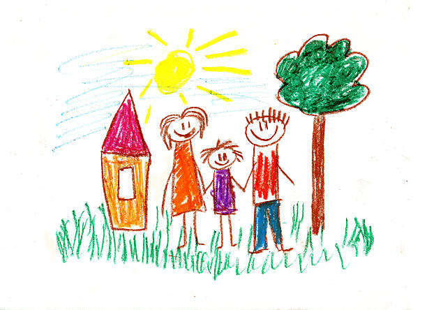

Lucas é um garotinho de 4 anos que ama desenhar e pintar, hobby que herdou de seu pai.
Todo dia, ele pega seu estojinho, cheio de lápis de cor e gizes de cera, e passa a tarde inteira rabiscando e colorindo, desenhando seus sonhos, imaginações, animais, coisas que viu passando na televisão, sua família, e o que mais sentisse vontade!
Seu maior sonho é, no futuro, ser um pintor, artista ou qualquer profissão que trabalhe com desenhos, pois assim, poderia viver desenhando e pintando todos os dias.
O que Lucas deveria fazer hoje?